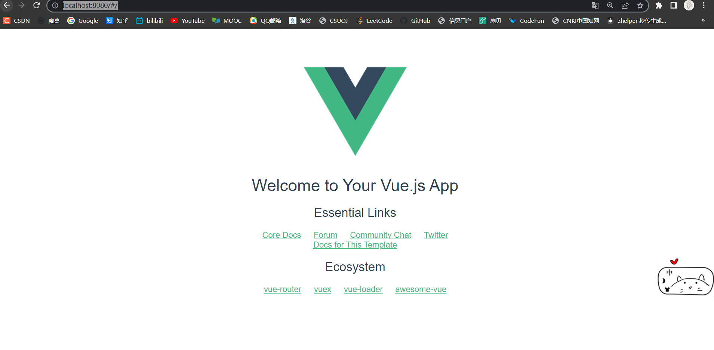

VSCODE配置安装必备插件VSCode 开发Vue必备插件VS Code中关于Vue的插件使用_vs vue插件_杨·先·生的博客-CSDN博客VUE配置利用npm全局安装npm install vue-cli -g #或者 npm install -g @vue/cli 打开脚本运行权限vue : 无法加载文件 C:\Users\xxx\AppData\Roaming\npm\vue.ps1，因为在此系统上禁止运行脚本。有关详细信息，请参阅 https:/go .microsoft_c:\users\ningmei\appdata\roaming\npm\vue.ps1,因为在此系_haoqi好奇的博客-CSDN博客利用vue-cli搭建脚手架vue init webpack 项目名运行cd 项目名 npm run dev 打开http://localhost:8080/#/congratulate！